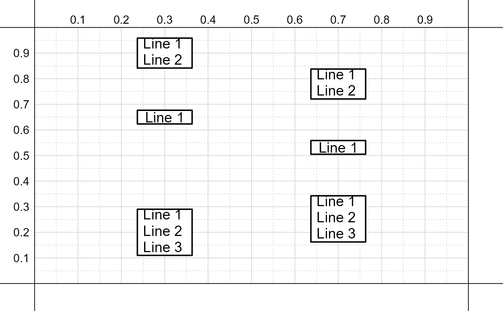

distribute.RdFunction that determines new y or x-axis values for the centers of a set of nodes in order to evenly distribute nodes vertically or horizontally.
distribute(nodes, vertical = TRUE, flush = FALSE, space = NULL, digits = 4)
| nodes | A list of lists, each list
giving the x and y coordinates for the
bottom, left, top, right and associated
corners for a given node (e.g., see output
of |
|---|---|
| vertical | Logical; if |
| flush | Logical; if |
| space | An optional value for the space between
nodes; if |
| digits | Number of digits to round output vector. |
A vector of values, either the new x or y-axis values for the centers of the nodes.
# Uneven spacing for y-axis positions x_y <- c( # x-axis c( .3, .3, .3 ), # y-axis c( .9, .65, .2 ) ) # Input with placeholders for x and y-axis values draft_inputs <- c( N01 = 'Line 1\nLine 2|x=[[1]]|y=[[4]]', N02 = 'Line 1|x=[[2]]|y=[[5]]', N03 = 'Line 1\nLine 2\nLine 3|x=[[3]]|y=[[6]]' ) # Update with values from 'x_y' inputs <- replace_with_values( draft_inputs, x_y ) # Add nodes to figure nodes <- add_nodes( inputs, output = TRUE )# Determine even y-axis positions new_y <- distribute( nodes ) # Update 'inputs' with new values x_y[1:3] <- .7; x_y[4:6] <- new_y inputs <- replace_with_values( draft_inputs, x_y ) # Add nodes to figure nodes <- add_nodes( inputs, output = TRUE )